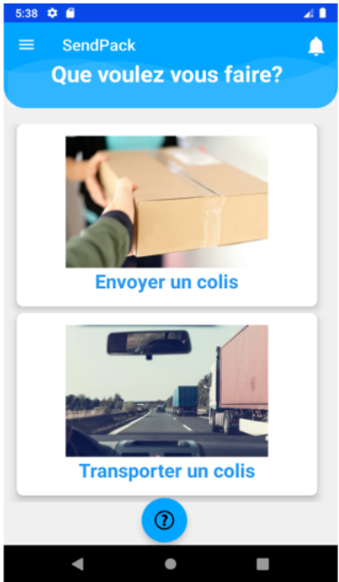
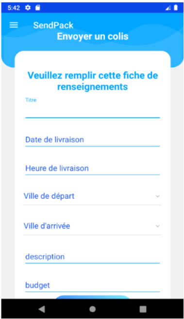

📦 SendPack
Présentation
Dans le cadre de mon projet de fin d'études en Licence Informatique, j'ai développé une application mobile permettant l'envoi de colis entre particuliers. Inspirée du principe du covoiturage, l'application permettait à un utilisateur effectuant un trajet d'emporter le colis d'un autre utilisateur, afin d'offrir une alternative plus flexible, rapide et économique aux services postaux traditionnels.
Objectifs
L'objectif principal était de concevoir une application complète couvrant l'ensemble du processus : création de compte, publication d'offres et de demandes ainsi qu'une messagerie interne. Le but était de proposer une solution fluide, ergonomique et fiable, répondant à un besoin concret d'optimisation des trajets des utilisateurs.
Contexte
Ce projet s'inscrivait dans le cadre de la validation de ma licence en Ingénierie des systèmes d'informations et des logiciels, il s'est déroulé pendant la période du COVID-19, ce qui a fortement influencé l'organisation : travail à distance, communication réduite, difficultés pour maintenir un rythme commun. Initialement prévu pour un binôme, j'ai finalement poursuivi le projet toute seule après l'abandon de ma partenaire pour raisons personnelles liées au contexte sanitaire.
Enjeux
Les enjeux du projet étaient multiples : proposer une interface simple et intuitive, garantir la fiabilité et la sécurité des données, et offrir une expérience fluide malgré la diversité des fonctionnalités. L'enjeu était également la validation de ma licence et ma capacité à illustrer mes compétences pratiques.
Risques
Les principaux risques étaient liés à la complexité technique, notamment l'intégration de modules complexes tels que la messagerie interne. Également, il y avait le risque de non-respect des délais amplifié par la situation exceptionnelle, et la nécessité de faire des choix entre certaines fonctionnalités secondaires pour garantir une livraison à temps.
Étapes du projet
Dans un premier temps, j'ai réalisé une étude de l'existant en analysant différentes applications de covoiturage et d'envoi de colis, pour avoir des idées sur les fonctionnalités pertinentes que je peux intégrer dans mon projet.
J'ai ensuite entamé le développement de l'application mobile en utilisant le langage Java sous Android Studio. J'ai participé à la spécification des composants de l'application, notamment les différents écrans à développer et les interactions entre eux. De mon côté j'ai développé une partie de l'application, en particulier les écrans liés à la création de profil utilisateur et à la publication d'annonces d'envois de colis.
J'ai commencé par concevoir les interfaces utilisateurs en XML et implémenter la logique associée dans les activités Java (Activities). J'ai géré la navigation entre les écrans à l'aide d'Intent, ainsi que le cycle de vie des activités. J'ai également mis en place des formulaires avec des champs de saisie (EditText), des boutons et des validations afin de contrôler les données entrées par l'utilisateur avant leur traitement. J'ai géré les interactions utilisateur en implémentant des écouteurs d'événements (listeners), par exemple avec des méthodes de type onClickListener sur les boutons, afin de déclencher des actions spécifiques lors des interactions (soumission de formulaire, navigation entre écrans, enregistrement des données).
Lorsque l'utilisateur soumet un formulaire, les données sont envoyées et stockées dans la base de données sous MariaDB. J'ai pris en charge la conception du modèle de données, en définissant les tables, les relations et les contraintes, puis en les manipulant à l'aide de requêtes SQL pour assurer la mise à jour des informations. Concernant la sécurité, j'ai mis en place un mécanisme de hachage des mots de passe lors de l'inscription, afin de protéger les données sensibles des utilisateurs avant leur stockage en base.
Ci-dessous un exemple des interfaces que j'ai développé pour l'application.

Écran d'accueil

Formulaire d'envoi de colis

Formulaire de création d'un compte
Tout au long du développement j'ai également utilisé Git pour le versionning du code et le suivi des modifications. Nous avons organisé notre travail sur des branches différentes de manière à avancer en parallèle sur les différentes fonctionnalités.
À mi-parcours, ma binôme a dû abandonner le projet pour des raisons personnelles liées au contexte sanitaire. J'ai donc repris l'ensemble du projet, j'ai dû revoir la planification avec l'enseignant encadrant, et j'ai fait le choix de recentrer le périmètre fonctionnel en supprimant certaines fonctionnalités, comme la messagerie interne, afin de pouvoir livrer une application fonctionnelle dans les délais impartis.
Acteurs
Le projet impliquait initialement moi, ma binôme et notre encadrant universitaire. Nous faisions des réunions à distance et échangions pour se répartir au fur et à mesure les tâches et suivre l'avancement. Après le départ de ma binôme, j'ai assumé seule la responsabilité technique et organisationnelle du projet.
Mon encadrant, malgré les difficultés liées au contexte sanitaire, a accompagné l'avancement en validant les choix techniques clés et en apportant des retours réguliers. Les échanges avec lui ont été essentiels pour garder une direction claire pour le déroulement du projet.
Résultats
Pour moi, les résultats ont été significatifs, j'ai pu mener à bien le développement de l'application et livrer une solution fonctionnelle qui m'a permis de valider ma Licence. J'ai pu également renforcer mes compétences en développement mobile, en java, en gestion de bases de données, ainsi que mes capacités d'organisation, d'adaptabilité et de persévérance.
Lendemains du projet
- À court terme, ce projet m'a permis de valider ma Licence et consolidé mon intérêt pour le développement d'applications mobiles.
- À moyen terme, il a posé les bases de ma manière de travailler, ça m'a appris à structurer un projet, définir les priorités et anticiper les difficultés techniques.
- Aujourd'hui, cette expérience m'aide à mieux gérer les projets que je mène en autonomie, notamment en termes d'organisation, de priorisation des tâches et d'adaptation aux contraintes.
Mon regard critique
Avec le recul, ce projet a été l'une de mes expériences les plus formatrices. Travailler seule sur une application aussi complète m'a appris à être rigoureuse, à prévoir des marges d'erreur, à m'adapter rapidement aux imprévus.
Ma valeur ajoutée a résidé dans ma capacité à mener le projet jusqu'à la fin, à produire une application cohérente et fonctionnelle malgré les contraintes, et à apprendre de manière accélérée plusieurs aspects du développement mobile.
J'en retire des enseignements essentiels comme savoir renoncer à certaines fonctionnalités pour respecter les délais, ainsi que l'importance de communiquer efficacement et de maintenir un rythme constant même en situation difficile.